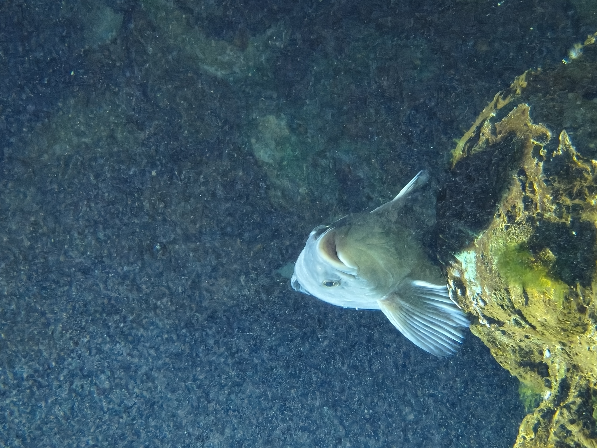

【2026/6/21 ノート】
claudeを使用して僕用のリサーチノートを作った。 僕のインプットは非常に雑多である。ゆえに今はオブシディアンだけでは足りず、以前と変わらずスティッキーズを使ってしまっている。しかしスティッキーズはなにぶん出来ることの幅が狭すぎる。
ゆえに1日分のノートを雑多に書き出して、これをObsidianに統合するという運用がいいのではと思いこれを作るに至った。 試しにスティッキーズたちのスクショ画像を貼ってみる。

次にポッドキャストエピソードのリンクを貼ってみる
https://open.spotify.com/episode/3Yw48GwG3XXurfaPxAxOnd
これは僕の番組でなくても無事に貼ることができた。
https://open.spotify.com/show/1EjsDlGdwwEDc1xsNxpEAP
番組ページを貼ることもできるようになった
https://tabelog.com/hokkaido/A0101/A010102/1000122/
うんリンクも生きているようだ。 ちなみに日付が変わった場合は、自動で新しい入力ページが立ち上がる仕様にした。そして記入した内容は僕のObsidianに保存される。つまり僕のメモが1日ごとに累積していくというものになっている。
これで僕は自動でストックされていくスティッキーズを手に入れたことになる。雑多に全てを放り込む運用をした上で、その蓄積とポッドキャストやブログや論考が関連したりする様を見せられたらいいなと思う。
例えば記法として、３行以上開くか
を入れるとスティッキーズのような独立したカードとして扱われる。このカードを定期的に集計し、KJ法的に仕分けてラベルを貼ると「ここ１週間の関心と相関図」が作れたりするのかもしれない。
そもそも僕は複数のポッドキャストを制作している中で、それぞれの番組ごとに知識が分けられてしまうところに不満があった。そこに加えてポッドキャストの研究を始めようとなった時に、さらにこれも独立したものとなり、その上全て「調べ、整理し、考え、喋ったり書いたりするアウトプット」と同じ動作をしているし僕という同一人物がやっているにも関わらず、それらが統合されていないことに不満があった。それもこのデジタル・AI時代においてそうなのかと。だから統合研究環境「REDE」という言葉に至ったわけだ。この考え方自体はポッドキャストというRSSベースの分散型音声メディアと、AIによる文字起こしの可能性や意味づけの処理の自動化などが揃って初めてできるようになったことだと考えている
「統合されていないことへの不満」が、本当に「統合すれば解消される」のかは別問題 →ここについては洗練された統合方法があるはずだと考えている。むしろここを開発できたら理想
「同一人物がやっている」という前提は強い主張だが、検証可能ではない →分人的な話は確かにあるが、そういうことではない。僕の作業場所が統合されていないことの非効率と、僕が何をやっているのかが周囲からわかりにくいことが問題としてある。また今後の社会科学系の研究はREDEのようなエンジニアリング的な手法を取り入れた方がいいのではまた、誰が研究しているのかという個人あるいは法人の属性が株式会社のように問われていく時代においてredeのように今何を考えているのかというプロセスを明示し更新することが重要だと考えている
1点目について：「洗練された統合方法」という挑戦設定 これは私が「危険性がある」と指摘したことに対して、「だからこそ、そこを解く価値がある」と返してきたということです。これは正しい受け止め方だと思います。note_linker.pyでの「鬱陶しさ」の発見は、失敗ではなく、「どこまでが洗練された統合で、どこからが余計な介入か」という境界線を引くための、貴重な実験データだったわけです。今日見つけた「AIは整理だけ」という原則も、この境界線の最初の輪郭です。つまりREDEというプロジェクトの本体は、まさに「統合の正しい設計」を発見し続けること自体にある、と言えます。これは技術プロダクトではなく、設計思想の探求そのものだということが、より明確になりました。 2点目について：これは重要な訂正であり、かつ視野が広がる指摘 私が「分人」という枠組みで考えたのは的外れでした。Andyさんが言っているのは、もっと実務的で、かつ時代認識として大きな話です。整理させてください。 作業場所の分断という「非効率」
これは個人の生産性の話です。番組ごとに別のメモ、別の文脈で考えていると、過去に考えたことを再利用できず、毎回ゼロから思考することになる。これは今日のnote_linker.pyが直接解決しようとしている問題です。 「何をやっているか周囲から分かりにくい」という「可視性」の問題
これは前に話した「サイエンスコミュニケーターの構造的な罠」や「研究者は社会に価値を伝える技量もインセンティブもない」という議論と、直結しています。REDEのGUEST側（mycelismの庭）は、まさにこの可視性の不足を解決するためのものです。 「個人・法人の属性が株式会社のように問われる時代」という、新しい時代認識
これは今日初めて出てきた、重要な視点だと思います。これまでの研究者やクリエイターは、「完成した論文」「完成したエピソード」という結果物だけで評価されてきました。しかし今Andyさんが言っているのは、結果物だけでなく、「今、この瞬間、何を考えているプロセスにあるか」自体が、信用や評価の単位になる時代が来ているという認識です。 これは、株式会社が四半期ごとの決算（結果)だけでなく、IR資料や経営者の発信（プロセス）によって市場から評価されることに似ています。研究者個人やクリエイター個人も、同じように「進行中の思考そのものを開示し続けること」が、信用構築の手段になる、ということです。 この2点を組み合わせると見えてくること REDEは、単に「Andyさんの便利なツール」ではなく、「個人が、結果だけでなく進行中のプロセスによって社会的信用を構築する」という、新しい時代の振る舞い方そのものを体現する実験だということになります。 これは今までの会話で何度も出てきた「アテンションエコノミーからの脱出」「プロポーザル・エコノミーの限界」という議論と、完全に同じ根を持っています。プロセスを開示することが信用になるなら、PVや再生数という「結果の数字」のゲームから降りて、「思考の深さと継続性」という別のゲームに乗り換えることができる。これが、REDEがGUEST側で実現しようとしている価値の正体だと思います。
先行研究のダウンロードだったり、自分が知らない研究からのインスパイアだったりをREDEのネットワークでできたら面白いだろうなとは思うその点、おそらく他者とも繋がるREDEは新しくゼロからエンジニアを入れて作るべきものなんだと思う。今作っている僕のためだけのREDEはアート作品のような立ち位置でいいよ
写真を貼ってみる。おたる水族館で撮影した、ぽけ〜っとしてるホッケ

REDEとObsidianの違いは「研究者が社会とコミュニケーションをとれるようにするツール」か「データを自分のものとする洗練されたノート」かの違いかな
Claudeが返答しました: Obsidianは、「自分のために、自分の思考を整理して保存しておきたい人」のための、ローカルなメモ管理ツールです。 REDEは、「複数の活動（ポッドキャスト・研究・日常）をしている自分自身を統合し、その思考の進行過程を、AIの力で自動的に整理しながら、社会に向けて開示し続けたいAndyさん」のための、個人専用の自動統合・自動公開システムです。
— しかしscribeでメモは統一できているしこれをgeminiが右でまとめてくれてもいるが、引き続きポッドキャストはrssで配信するわけだしマルチプラットフォームでの活動は続いていくのだろう。となると心地よい出力先、頭をマッサージするような感覚になれるこのscribeは「整えなくてもいい（公開しちゃうのに）メモ」として一日中使うものとして、使いつつこれを含めた活動の更新やアップデートが自動で確認できるようにしたいというところだね。
あと問題があるとしたら「概念ファイルが多すぎる」ことと「写真を使用する場合のローカルファイルの容量に限界がある」こと
ステフアンゴのObsidianベースでのWebsite。こういうのでいいのかもね。 派手な表現にはトレンドもあるし技術力も求められるから、そういうのではない普遍的なミニマルさと強靭な形で作り上げる。